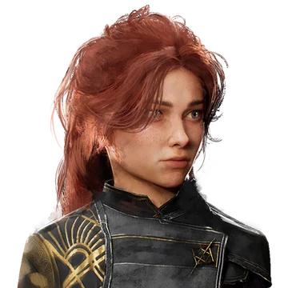
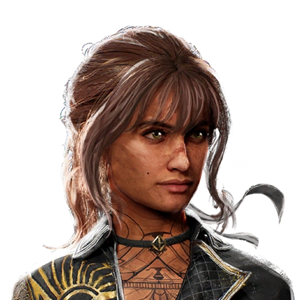
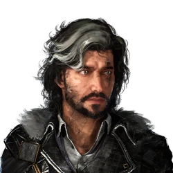
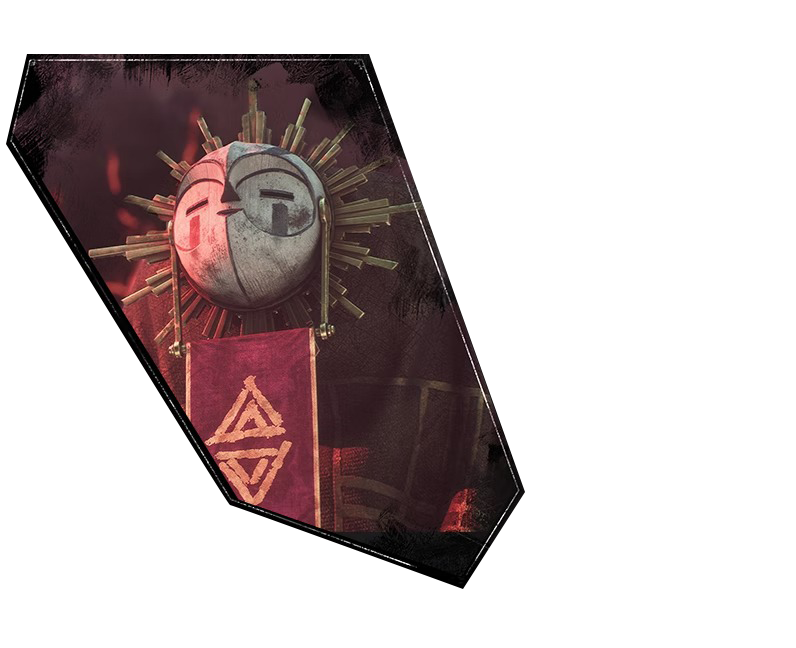
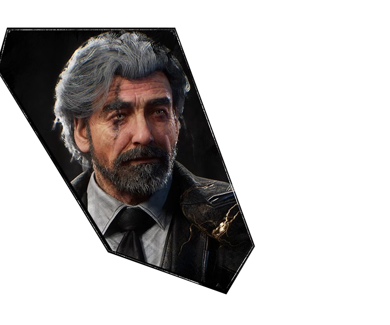
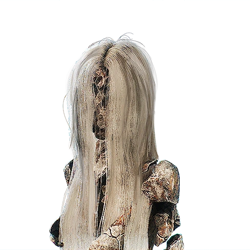

Expedition 33
Gustave

Ingeniero de Lumière y hermano mayor adoptivo de Maelle, es el ancla de la expedición. De carácter serio, protector y pragmático, siempre pone las necesidades del grupo por encima de las suyas. Es un hombre marcado por la responsabilidad, alguien que carga el peso del deber sin quejarse. Su mirada está fija en un futuro incierto, pero su determinación lo convierte en un verdadero líder natural. Su fuerza no está solo en lo físico, sino en la calma y confianza que transmite.
Lune

Una estudiosa apasionada por el conocimiento y la magia. Inteligente y perspicaz, busca respuestas en lugares donde otros solo ven enigmas. Su curiosidad está alimentada tanto por la ciencia como por la espiritualidad, y eso la convierte en una voz singular dentro de la expedición. Lune es observadora, reflexiva y siempre dispuesta a cuestionar lo establecido. Su encanto está en la forma en que combina sensibilidad con determinación, equilibrando emoción y razón.
Maelle
La hermana adoptiva de Gustave representa el espíritu rebelde y soñador de la expedición. Su carácter impulsivo la lleva a buscar experiencias nuevas y romper las cadenas que la atan a una vida demasiado rígida. Con energía juvenil y un corazón indomable, Maelle encarna la necesidad de descubrirse a uno mismo. Su búsqueda personal se entrelaza con la de todo el grupo, y aunque a veces puede parecer imprudente, su valentía es contagiosa.
Sciel
El guerrero noble, fuerte y compasivo, con un pasado difícil que no oculta del todo. Su imponente presencia física se ve suavizada por un corazón empático y protector. Sciel es el tipo de compañero que no solo lucha con fuerza, sino que también ofrece apoyo emocional cuando la oscuridad amenaza con quebrar al grupo. Su valentía nace de la esperanza, y aunque es capaz de aceptar la crudeza de la realidad, se rehúsa a dejarse consumir por ella.
Verso
Un enigma con forma humana. Verso es alguien que parece observar y comprender más de lo que dice, con una calma inquietante que despierta tantas preguntas como respuestas. Su aura misteriosa lo convierte en una figura difícil de descifrar: ¿aliado, observador o algo más? Fascinante y desconcertante al mismo tiempo, es un personaje que atrae las miradas por su ambigüedad. Su silencio dice tanto como las palabras que escoge con cuidado.
Monoco

Un Gestral, mezcla de ingenio y ferocidad. Su mente afilada y su apetito por el desafío lo convierten en un compañero imprevisible en combate. Intelectual, casi filosófico, disfruta del acto de enfrentarse a la dificultad como si fuese un juego. Su carácter puede parecer distante, pero detrás hay una pasión intensa por demostrar su fuerza y superar sus propios límites. Monoco encarna la unión entre la lógica de una máquina y la emoción de un guerrero.
Esquie
Una criatura mítica, más leyenda que carne, cuya sola presencia tiene un peso emocional profundo en el grupo. Con un aura etérea y casi sagrada, Squie no necesita imponerse en combate para transmitir poder. Su esencia es inspiradora: acompaña, fortalece la moral y recuerda a la expedición que su viaje es más grande que ellos mismos. Representa lo místico, lo intangible, aquello que está más allá de la comprensión humana pero que todos sienten en el corazón.
Renoir
Un combatiente decidido y de carácter fuerte, que irradia convicción en cada gesto. Su presencia impone respeto, tanto por su fuerza física como por su determinación inquebrantable. Renou no se doblega ante las dificultades, lo que lo convierte en un pilar de apoyo en momentos de tensión. Su carácter implacable, sin embargo, también encierra un peso personal que lo define. Es un guerrero marcado por su historia, pero fortalecido por ella.
Peintresse
La Peintresse es una entidad mística encargada de activar el Contador, un mecanismo que marca el inicio de cada nueva expedición. Su función consiste en pintar el número de la expedición, lo que desencadena una purga masiva de la población humana. Este acto se presenta como una forma de arte supremo, donde solo los dignos sobreviven. A lo largo de generaciones, La Peintresse ha sido vista como una figura inalcanzable, casi divina, cuya criterio estético decide el destino del mundo. Su visión del arte está profundamente ligada a la pureza, el orden y la perfección, lo que la lleva a rechazar la imperfección humana como algo que debe ser eliminado.